User Guide for Object Storage
Contents
User Guide for Object Storage#
Introduction#
Aurreum Data Protection Suite (ADPS) enables you to back up and restore object storage. This guide introduces how to properly use ADPS to back up and restore object storage.
Features#
Feature |
Description |
|---|---|
Backup type |
Full backup: Back up one or more files and buckets. |
Backup source |
File, bucket |
Backup compression |
None, fast, tunable |
Channels |
A positive integer between 1 and 255 |
Backup target |
Standard storage pool, de-duplication storage pool, file synthetic pool, tape library pool, object storage service pool |
Backup schedule |
Immediate, one-time, hourly, daily, weekly, monthly |
Restore type |
Timepoint restore: Restore files and storage buckets to a specified point-in-time state. |
Restore location |
Original path or specified path |
Restore granularity |
File, bucket |
Restore to different hosts |
Data can be restored from one object storage vendor to another vendor or a Linux server. |
Reconnection time |
The job continues after the abnormal reset occurs in the network within the set time. The default value is 10 minutes. |
Storage pool replication |
Object storage backup sets support storage pool replication. |
Restore from target pools |
Restoring backup sets from a target storage pool is supported. |
Pre/Post action |
The pre action is executed after the job starts and before the resource is backed up or restored. The post action is executed after the resource is backed up or restored. |
Speed limit |
The data transfer speed or disk read and write speed can be limited. |
Modify a job’s backup source and target |
Modifying the backup source and backup target of a job is supported. |
IPv6 |
Data transfer and management over the IPv6 network are supported. |
Install and Configure Agent#
Get Agent Package#
Open a browser and log in to ADPS as an admin. Click Resource -> Install Agent icon.
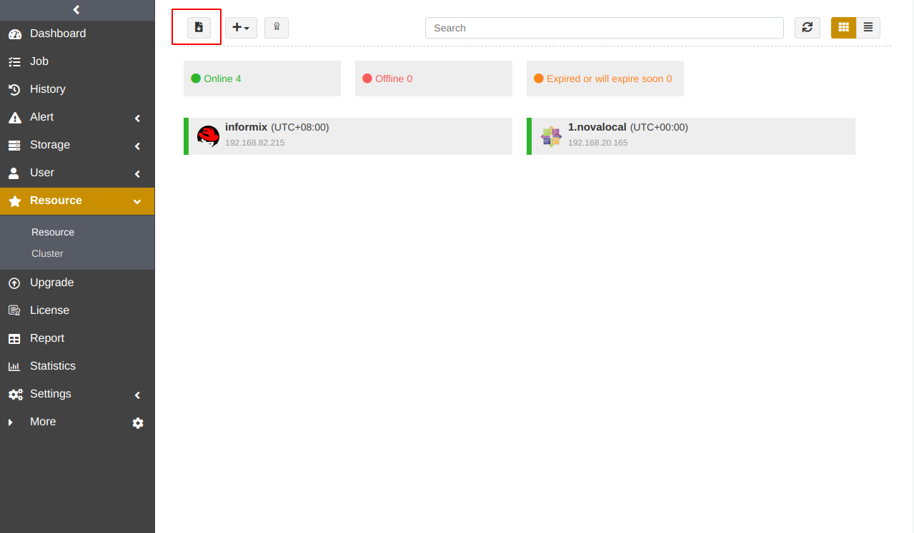
Install and Configure Agent on Linux#
Select Linux as the system and Object Storage Service (OBS) as the module. Copy an installation command.
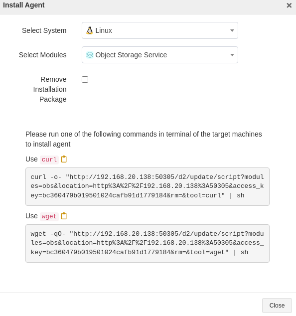
Paste and run the command on the target host to install the agent.
root@ubuntu1804:/home# curl -o- "http://192.168.20.85:50305/d2/update/script?modules=obs&location=http%3A%2F%2F192.168.20.85%3A50305&access_key=2042288d749dba47e963d1ab09a6472b&rm=&tool=curl" | sh % Total % Received % Xferd Average Speed Time Time Time Current Dload Upload Total Spent Left Speed 100 7903 0 7903 0 0 593k 0 --:--:-- --:--:-- --:--:-- 593k % Total % Received % Xferd Average Speed Time Time Time Current Dload Upload Total Spent Left Speed 0 0 0 0 0 0 0 0 --:--:-- --:--:-- --:--:-- 0 100 47.0M 100 47.0M 0 0 15.5M 0 0:00:03 0:00:03 --:--:-- 19.3M % Total % Received % Xferd Average Speed Time Time Time Current Dload Upload Total Spent Left Speed 0 0 0 0 0 0 0 0 --:--:-- 0:00:01 --:--:-- 0 100 5702k 100 5702k 0 0 3962k 0 0:00:01 0:00:01 --:--:-- 15.1M % Total % Received % Xferd Average Speed Time Time Time Current Dload Upload Total Spent Left Speed 0 0 0 0 0 0 0 0 --:--:-- --:--:-- --:--:-- 0 100 828k 100 828k 0 0 5020k 0 --:--:-- --:--:-- --:--:-- 5020k
Go to the Resource page after the installation. The target host will be available on the host list.
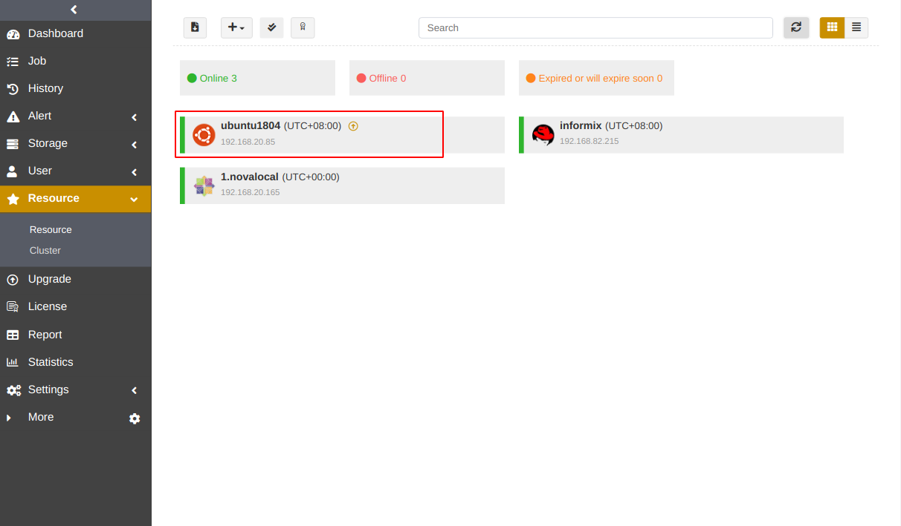
Register Host#
Log in to ADPS as an admin, go to Resource, and select the host that you want to activate. Click the Register icon.
Activate License#
In the pop-up Activate window, select the resource to activate. Click Submit.
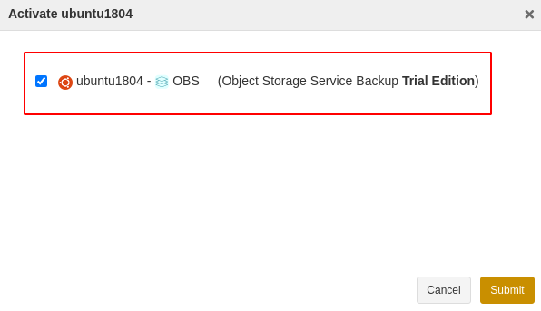
Add and Configure Object Storage#
Object Storage Environment Compatibility#
The supported object storage service vendors are:
Amazon S3 (AWS S3)
Microsoft Azure
Google Cloud Storage (GCS)
Backblaze B2
Others (S3-compatible storage)
Add Object Storage#
Log in to ADPS as an admin. Click Resource -> Add icon and select Object Storage Service.
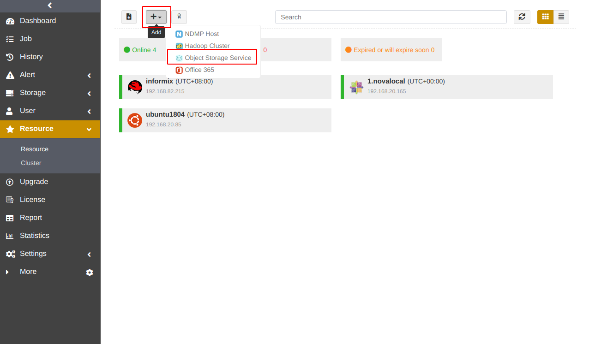
Fill in the information in the pop-up Add Object Storage Service window. Click Submit.
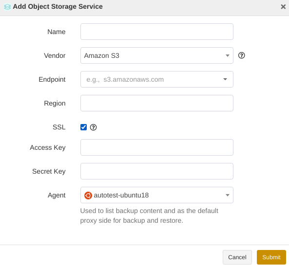
Name: Customize the name of the object storage service.
Vendor: Select a cloud service vendor. At present, ADPS supports Amazon Cloud, Microsoft Azure, Google Cloud Storage (GCS), Backblaze B2, and other cloud service vendors that are compatible with the S3 protocol.
Endpoint: Select or enter the endpoint address of the cloud service.
Region: Select or enter the region where the data center is located (it is automatically filled in based on the endpoint).
SSL: Enable or disable SSL connection. If the cloud service vendor supports SSL connection, you can choose to enable this option according to your needs. If the vendor does not support SSL, it is not required to enable it.
Access Key: Enter the Access Key that is associated with your object storage account.
Secret Key: Enter the Secret Key that is associated with your object storage account.
Agent: Select a host with the OBS agent installed as the Agent. It lists the backup source and works as the default host for the backup and restore.
Go to the Resource interface after the settings. The newly added object storage service will be available on the list.

Activate License#
Click the host to display the object storage resource. Click Activate.
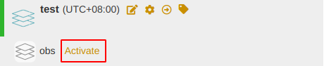
In the pop-up Activate window, select the Object Storage Service Backup module, and click the Activate Trial Edition button.
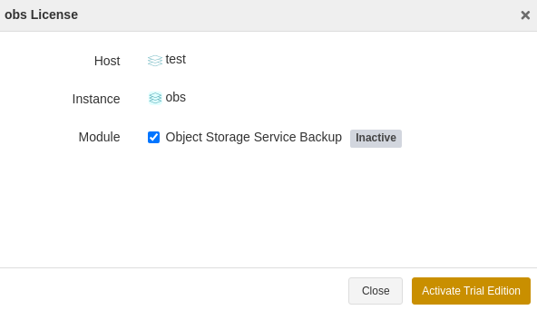
Authorize User#
After the activation, authorize users to operate the resource in the pop-up Authorize window.
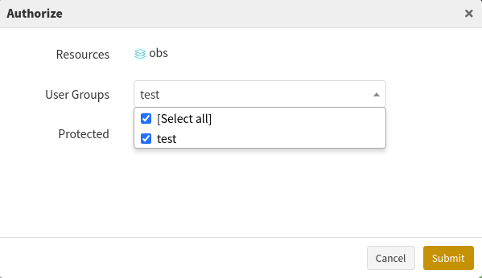
Before You Begin#
Check Resource#
Log in to ADPS as an operator and go to Resource. The activated and authorized resource is available on the host list with an “Online” state. If the resource is not available, see Authorize User in Add and Configure Object Storage.
Check Storage Pool#
Log in to ADPS as an operator, go to Storage Pool and check whether a storage pool is available. If no storage pool is present, contact the admin to create one and assign permissions to the operator.
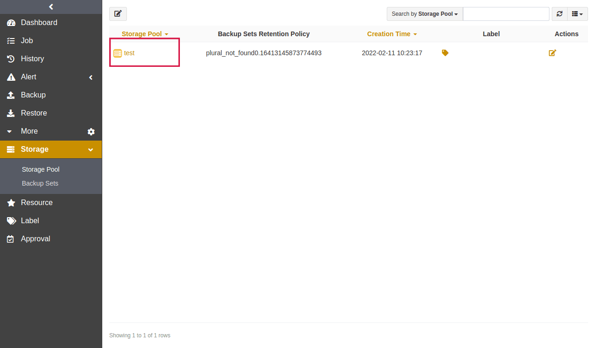
Create Backup Jobs#
This chapter introduces how to back up object storage.
Prerequisites#
The object storage agent has been installed. For installation, see Install and Configure Agent.
The object storage has been added. For details, see Add and Configure Object Storage.
The license has been activated, and the resource has been authorized to users.
Log in to ADPS as the operator with the resource authorized.
Create Full Backup Jobs#
All buckets can be backed up.
Click Backup and select the object storage host and resource.
Select Full Backup as the backup type. Choose buckets and files that you want to back up.
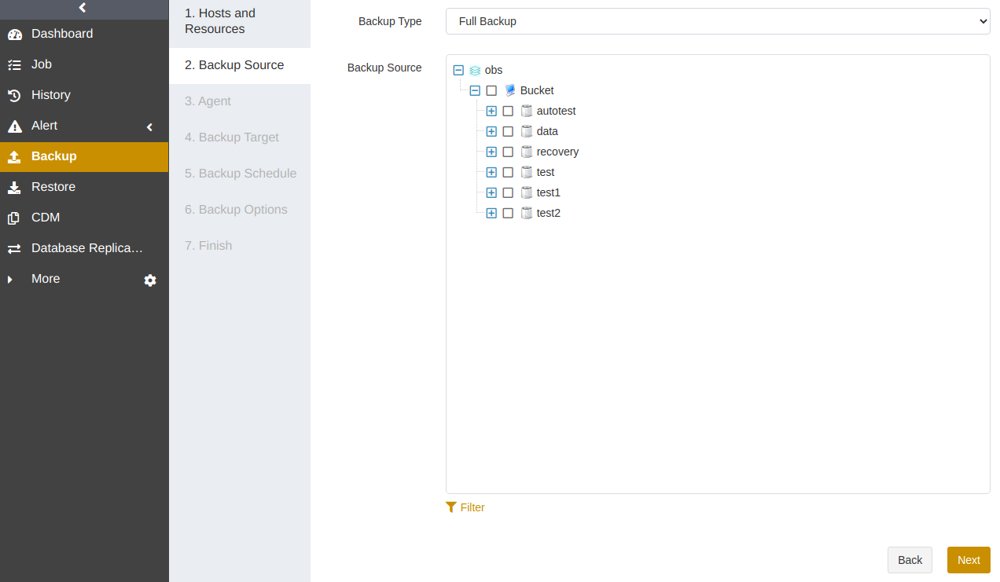
Select Agent. Ensure that the selected agent can communicate with the object storage host.
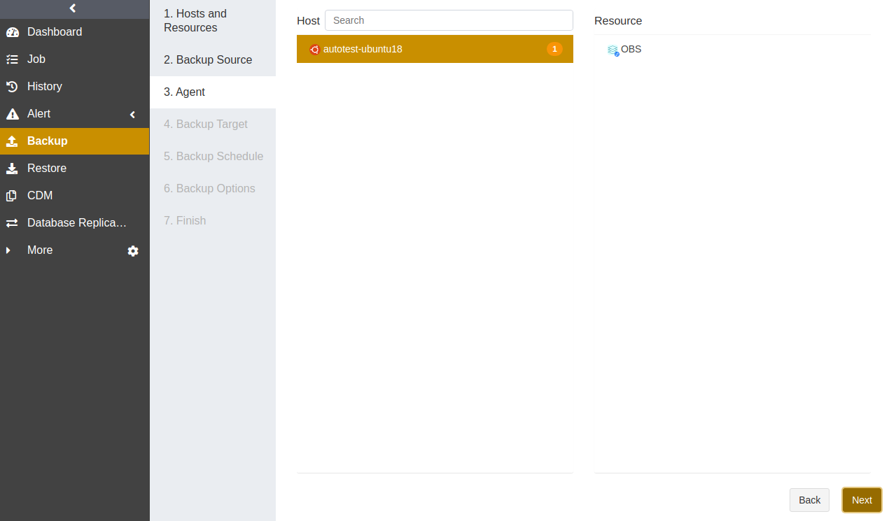
Select Backup Target.
Select Backup Schedule to set the execution time of the backup job. For details, see Backup Schedule Operation.
Set Backup Options, including common and advanced options.
Common options:
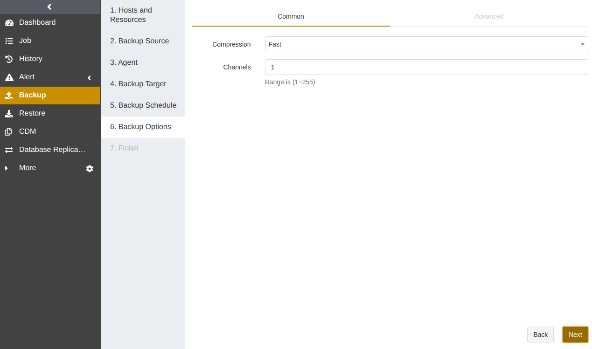
Compression: Fast is enabled by default.
None: During the backup, the data will not be compressed.
Tunable: You can customize the compression level. This option requires an activated feature of Advanced Compression.
Fast: During the backup, the data will be compressed by fast compression algorithms.
Channels: This option can improve backup efficiency. The default value is 1 and the range is from 1 to 255. For details, please refer to Channel Number Configuration.
Advanced options:
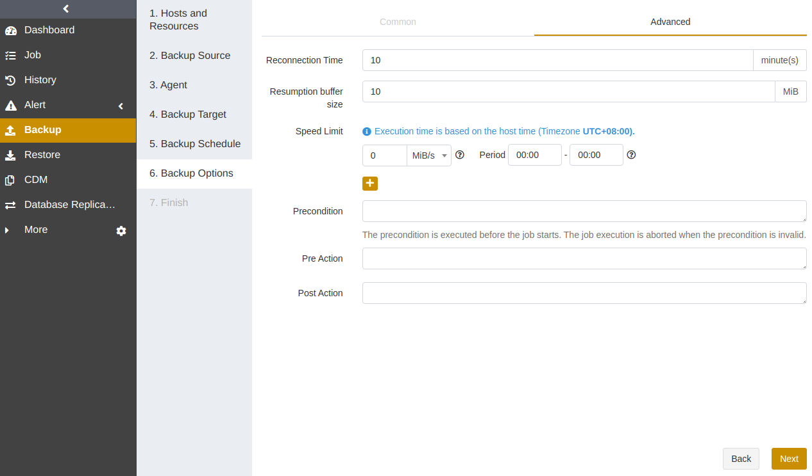
Reconnection time: This option supports 1 to 60 minutes. The job continues after the abnormal reset occurs in the network within the set time. The unit is minute.
Speed limit: This option can limit data transfer speed or disk read and write speed. The unit is MiB/s.
Precondition: The precondition is checked before the job starts. The job execution is aborted when the precondition is invalid.
Pre/Post action: The pre action is executed after the job starts and before the resource is backed up or restored. The post action is executed after the resource is backed up or restored.
Set the Job Name, and check whether the job information is correct. Click Submit.
Create Incremental Backup Jobs#
Incremental backup jobs are created based on full backup jobs. They back up only the data that has changed since the last full backup.
Creating an incremental backup is the same as creating a full backup. Select Incremental Backup, and choose a full backup as the base. The incremental backup job will be performed according to the storage buckets and files selected in the full backup.
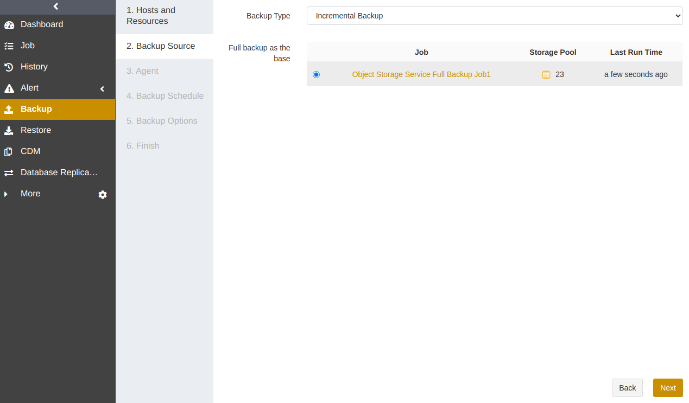
Note:
Only the full backup requires a Backup Target. Incremental backups have the same backup target as the full backup selected as their base.
Create Synthetic Backup Jobs#
Synthetic backup combines a full backup and some incremental backups into a new full backup. It can reduce periodic full backups, save storage, and improve backup and recovery efficiency.
Creating a synthetic backup is similar to creating a full backup. Select Synthetic Backup. Choose buckets and files.
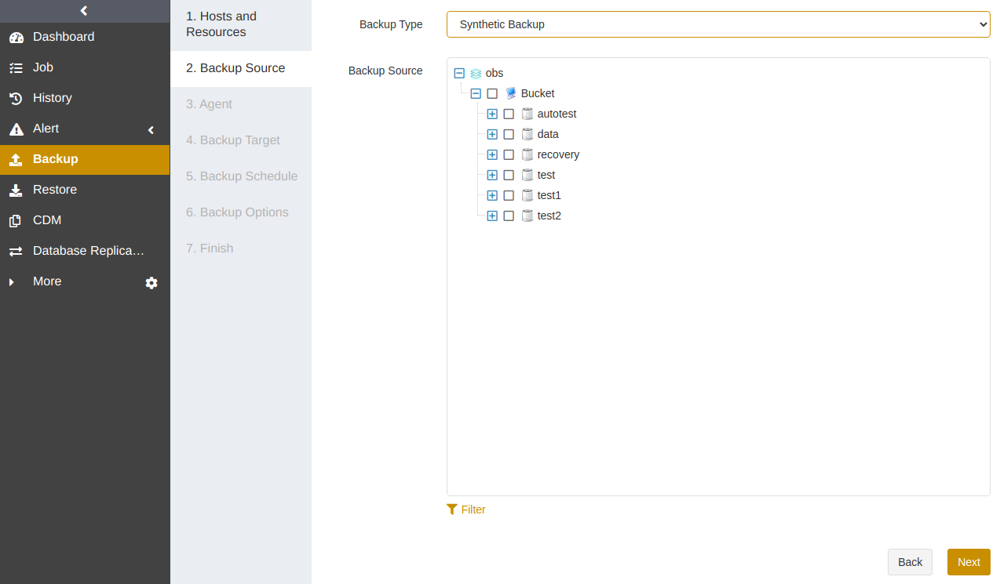
Select Agent.
Select Backup Target. The backup target can only be a file synthetic pool. If no file synthetic pool is present, please contact the admin to create one.
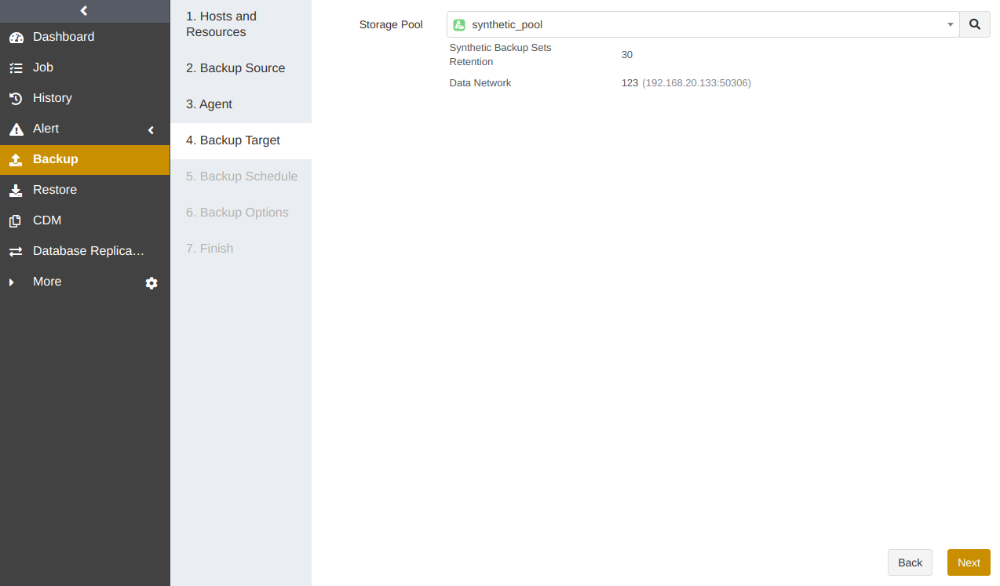
Select Backup Schedule to set the execution time of the backup job. For details, see Backup Schedule Operation.
Set Backup Options according to your needs.
Set the Job Name and check whether the job information is correct. Click Submit.
Create Restore Jobs#
This chapter introduces how to restore object storage.
Prerequisites#
A backup job is completed. See Create Backup Jobs.
To restore to another host, install an agent on that host, activate the license and authorize users.
Create Timepoint Restore Jobs#
When a folder or file of the object storage is lost, it can be restored to a specified point-in-time state through Timepoint Restore.
Select the object storage host and resource. Click Next.
Select Timepoint Restore and choose a backup point in time that you want to restore. The backup points in time of incremental backup sets are under their base full backup. Click Next.
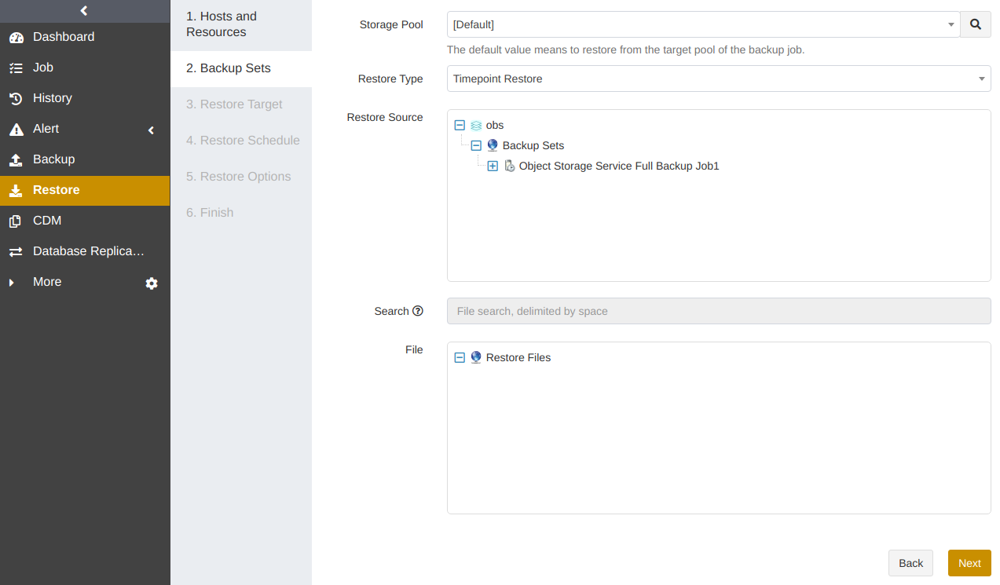
Set Restore Target. The restore target can be the source or another host. Click Next.
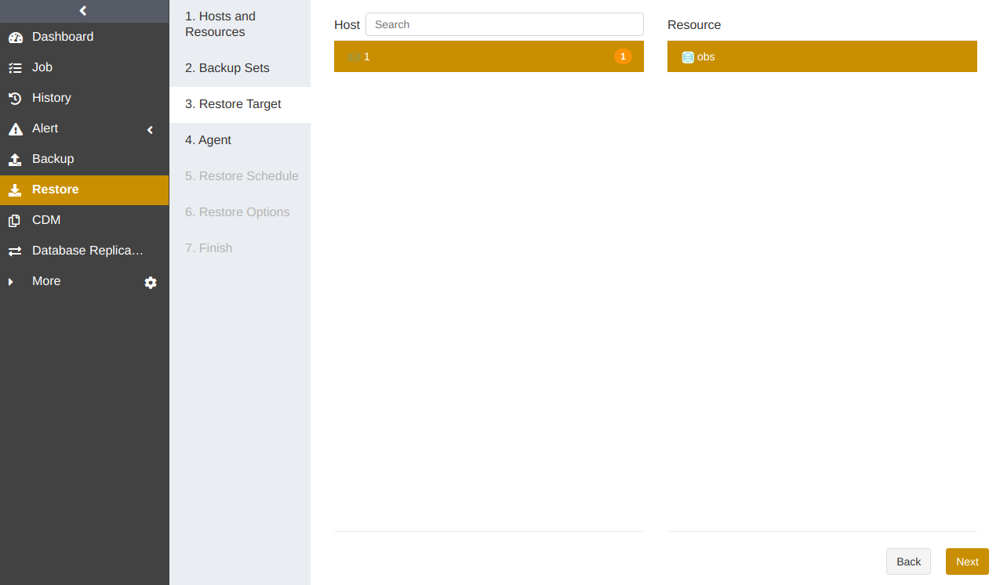
Select Agent. Click Next.
Set Restore Schedule. It only supports immediate and one-time schedules. Click Next.
Set Restore Options. In the common options, you can set Channels. The maximum number of channels cannot exceed that of the backup job. You can also set the Restore Location to the original path or enter a path manually. Click Next.
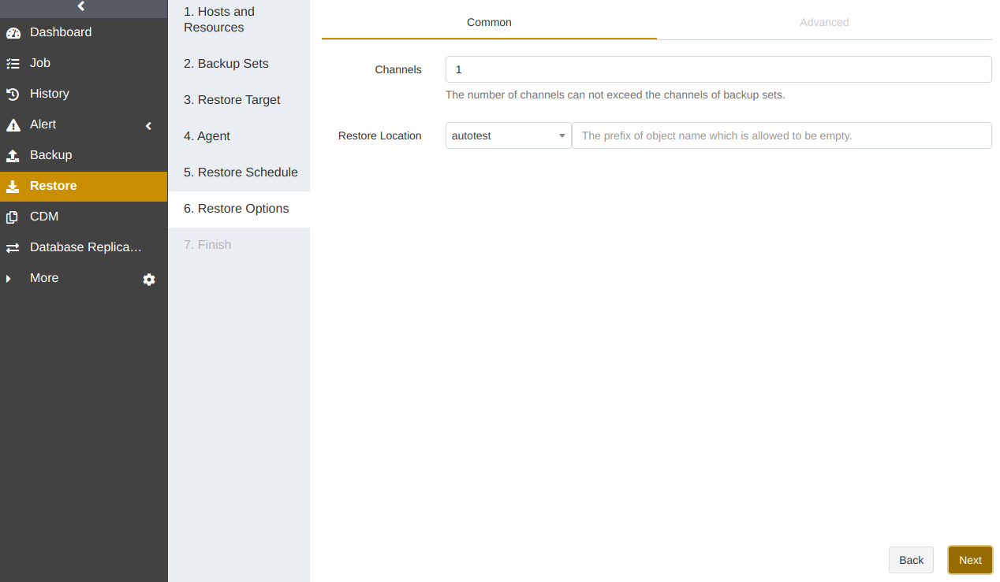
Set the Job Name and confirm the job information. Click Submit.
Create Instant Recovery Jobs#
The instant recovery mounts the synthetic backup sets to the restore target through the NFS protocol. Mounting backup sets over the Internet does not require reading and transferring data, which can reduce the recovery time.
Note:
To use object storage instant recovery, install the nfsd package on the storage server.
Create from Restore Menu#
Go to the Restore page. Select the object storage host and resource. Click Next.
Select Instant Recovery and choose a backup point in time that you want to restore. Click Next.
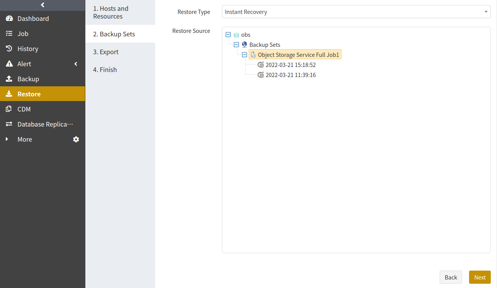
On the Export interface, set the export directory and access control list for the backup set. Click Next.
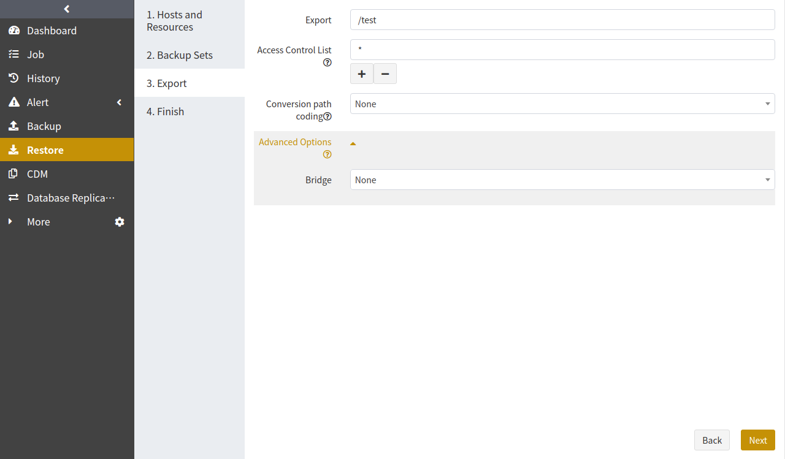
Export: Set the export mount point.
Access control list: This option refers to the list of agents where the backup set can be mounted. It supports IP address or CIDR. * means that all agents can access the backup set.
Conversion path coding: Set the path coding. The default path coding for mounting and restoring files is UTF-8.
Bridge: Use a bridged network to export backup sets. It can avoid conflicts with the system’s NFS service.
Note:
The 4th bit of the IP address in the Bridge option is required to be entered manually. The IP address must be a valid one that has not been used in this network segment.
To set the Bridge, install bridge-utils and edit the /etc/network/interfaces configuration file. Add the following:
auto br0 iface br0 inet static address 192.168.88.10 netmask 255.255.255.0 gateway 192.168.88.1 bridge_ports eth0 bridge_stp off bridge_fd 0
Confirm the job information. Click Submit.
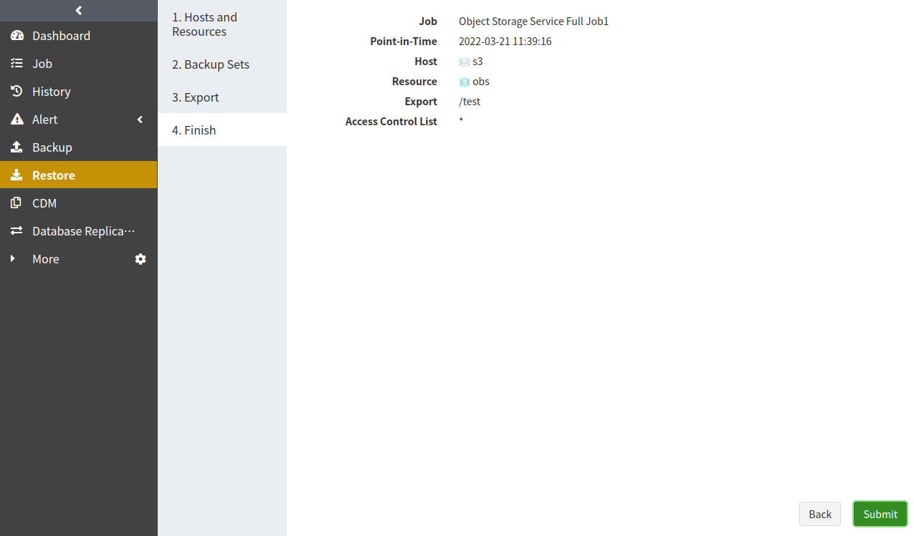
You will be redirected to the help page. Mount the files manually according to the procedure.
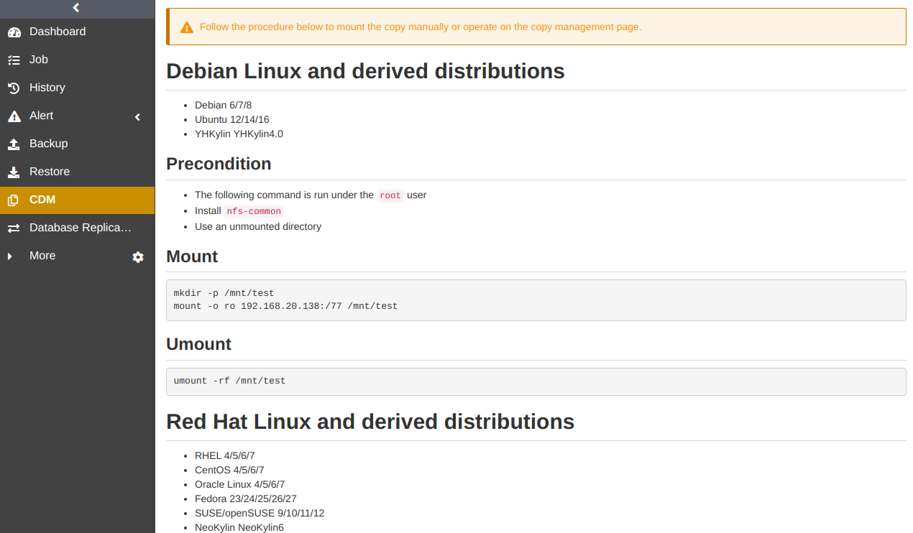
Or you can manage the copies on the CDM page.
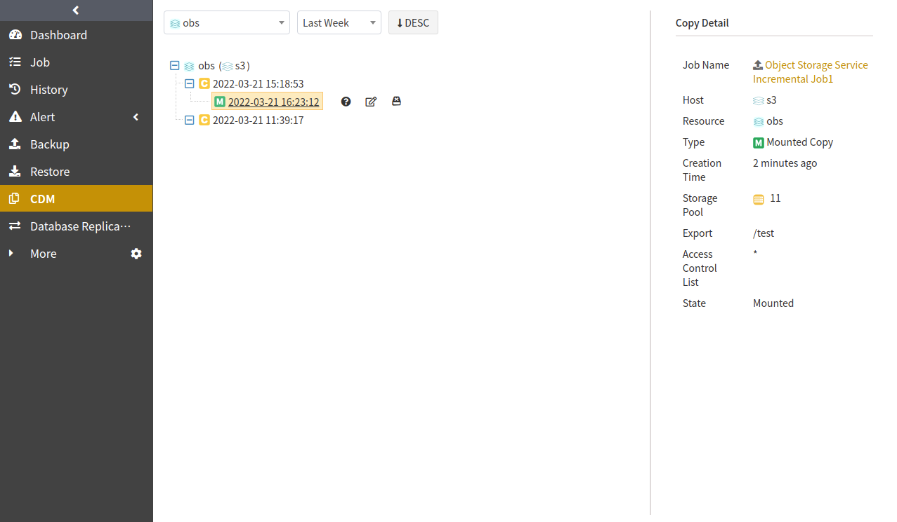
Help: Click
 to reach the help page.
to reach the help page.Modify: Click to modify the export directory and access control list.
Delete: Click to delete the job record.
Check Successful Recovery#
After the instant recovery is completed, enter the CDM menu. You can see a recovery history record under the backup point in time of the corresponding object storage.
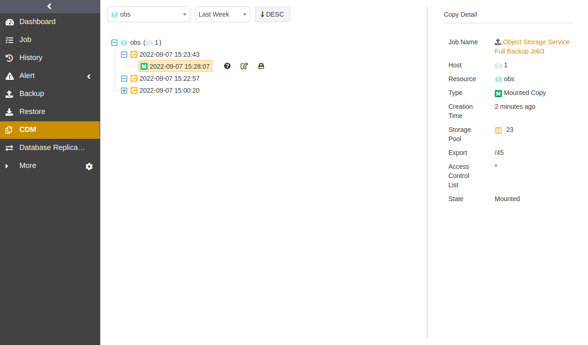
Detach Copy#
You can click the Detach icon beside the job record to detach the mounted data copies from the agents. Please note that if the mounted directory has data files being applied, the files will be deleted.
Click the Detach icon beside the data copy record.
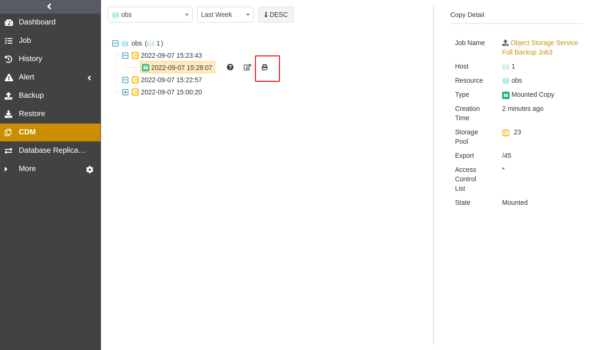
Pay attention to the warning and enter the verification code.
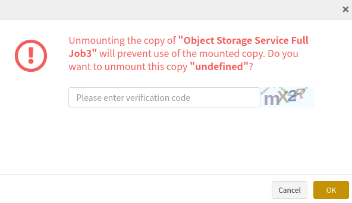
Manage Job#
The Job interface provides the backup and restore job information of all object storage. You can start, modify, and delete the jobs.
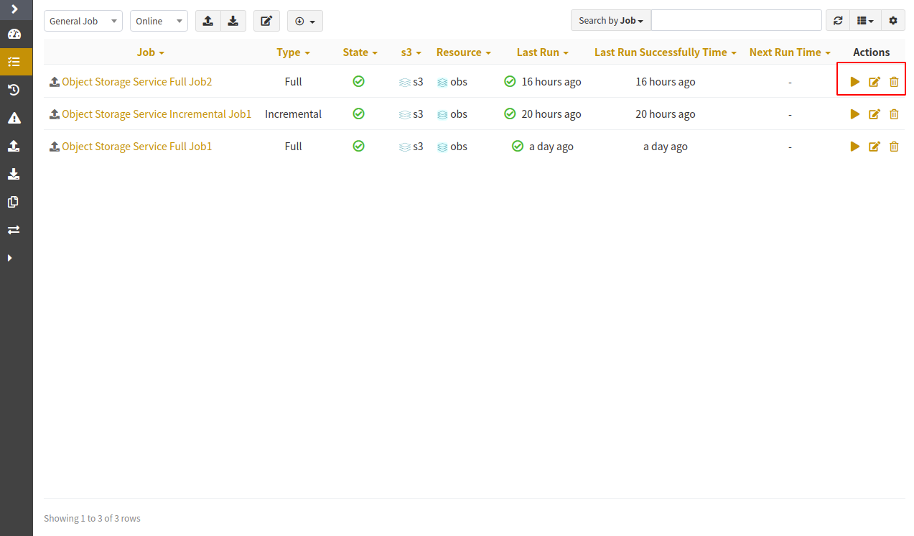
Start: Click
 to start the job immediately.
to start the job immediately.Modify: Click to modify the basic job information, backup/restore schedule, and backup/restore options.
Delete: Click
 to access the confirmation window. Click OK to delete the job.
to access the confirmation window. Click OK to delete the job.
Backup Protection Policy#
Backup Schedule Operation#
ADPS provides six types of backup schedule types. The schedule type selected is only valid for the currently created job.

Immediate: The job immediately starts after it is submitted.
One Time: After the job is created, the job will be in an idle state and start to run when the specified execution time is reached.
Hourly: After the job is created, the first run will be initiated at the specified Start Time. The next run will be executed after a specified number of hours/minutes within the time range according to the setting. If the unit is Hour, you can set the value from 1 to 24. If you select the Minute as the unit, then the value can be set from 1 to 60.
Daily: After the job is created, the first run will be initiated at the specified Start Time. The next run will be executed after a specified number of days according to the setting. The value is an integer between 1 and 5.
Weekly: After the job is created, the first run will be initiated at the specified Start Time. The next run will be executed after a specified number of weeks according to the setting. You can specify which day of the week to run the job.
Monthly: The job runs on the specified days of some months at the specified time. For example, you can set the job to run on January 1 and June 1 at 20:00. Or you can set it to run on the first Monday of every month at 20:00.
Example: Run the job every two weeks on Friday at 18:00

The execution time will be:
If the current time is Friday at 17:00, the execution time will be Friday at 18:00 (the current day).
If the current time is Thursday at 17:00, the execution time will be Friday at 18:00 (the next day).
If the current time is Saturday at 17:00, the execution time will be next Friday at 18:00.
After the first run is completed, the job will start automatically at 18:00 on Friday every two weeks.
Backup Policy Advice#
ADPS offers three backup types for object storage: full backup, incremental backup, and synthetic backup. It is recommended to formulate the following backup policy according to different situations such as network bandwidth, business data volume, security requirements, and the amount of data loss that you can tolerate.
Run a Full Backup once a week when the application traffic is small to ensure that you have an RTO of one week.
After that, you can run an Incremental Backup every day to reduce the backup time and ensure that you have an RPO of one day.
Avoid using the following strategies:
Perform only the full backups.
Perform a full backup followed by all incremental backups.
Channel Number Configuration#
Object storage supports up to 255 channels. You can set the channel number for the backup and restore jobs according to your environment, but the value you set for the restore job cannot exceed that of the backup job. A reasonable number of channels can improve job performance, which is recommended to be the same as the number of CPU cores in the agent. The efficiency improvement will not be obvious if the number of channels exceeds that of CPU cores.